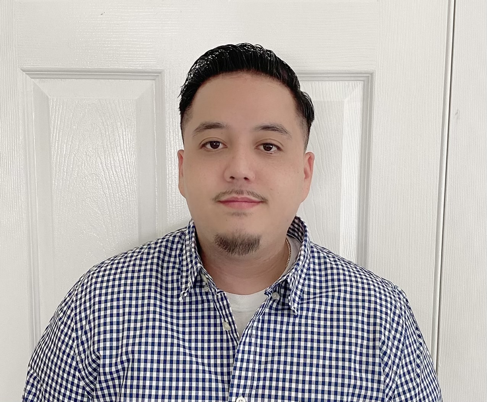

Benjamin Escobar

Summary
I am currently a Laboratory Service Engineer looking to transition into become a Software Developer.
Education
- University of California, Berkeley
Berkeley, CA
Certificate in Full Stack Web Development
(2023)
- San Francisco State University
San Francisco, CA
Bachelor of Science, Business Administration with concentration in Finance
(2020)
Work Experience
Laboratory Service Engineer II
August 2021- Present
- Troubleshot, performed preventative maintenance, upgrades, and calibration of lab equipment, adhering to safety protocols using Personal Protective Equipment (PPE) for hazardous materials.
- Installed and supported prototype equipment, developed procedures and documentation, and provided essential support for hardware and software R&D activities and customer projects.
- Interpreted customer needs and collaborated with engineers to resolve complex system issues, including boot failures and connectivity problems.
- Managed software updates, license key renewals, and patch installations, ensuring optimal system functionality through effective software lifecycle management.
- Conducted log analysis and firmware maintenance, resolved shared memory issues, and executed recovery procedures for E-platforms while addressing specific issues like disconnected cables and I/O mismatches.
Customer Engineer II
November 2017- August 2021
- Delivered technical support for hardware and software issues, achieving high customer satisfaction through effective troubleshooting and prompt resolution.
- Managed installations and upgrades, ensuring seamless transitions for client systems and minimizing downtime.
- Employed strong analytical skills to assess system performance and identify areas for improvement, implementing solutions that enhance overall functionality.
Skills
- Website design, develop, troubleshoot, and debug.
- Excellent verbal and written communication skills.
- Problem solving and analytical skills.
- Technical skills: JavaScript ES6+, CSS3, HTML5, SQL, NoSQL, GitHub, MongoDB, MySQL, Express, React, Node, Handlebars, jQuery, Bootstrap, GitHub, Heroku, Microsoft Excel, Word, and PowerPoint.
Awards and Certifications
Other
Contact Me
My Hobbies
GitHub